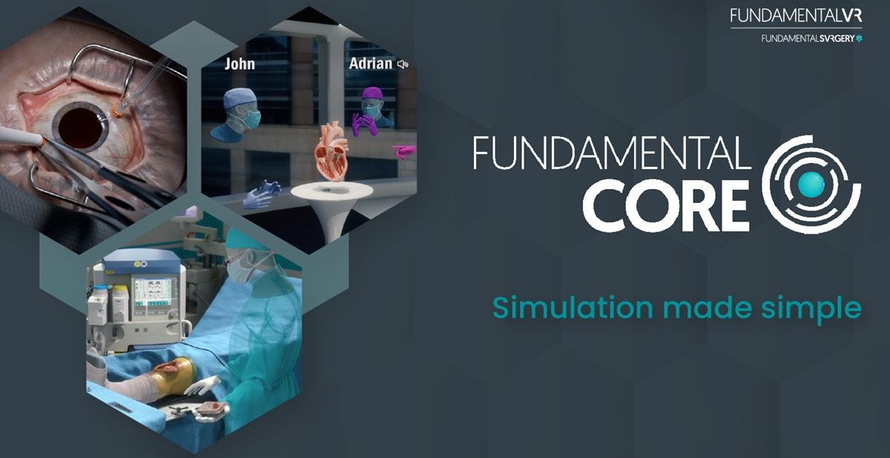

Fundamental VR
Software Engineer
Developed and contributed to 4 award-winning Metaverse VR Simulations for surgical training for multi user applications.
Implemented a Content Management System for codebase used by other developers and created documentation.
Collaborated with designers to implement and refine features, UX and user interfaces.
Optimized performance to maintain a consistent 60 FPS for app submission.
Identified and resolved bugs with thorough testing with QA to ensure a polished product.
Past Roles Include: Associate Software Engineer, Software Engineer Intern
SanaCareVR is a VR simulation for nurses to train them in sterile surgical procedures. This was a multiplayer gamified simulation which involved gauze counting and sterile activity.
I was mainly responsible for the main UI. Through this UI the user was able to proceed through the activity and submit answers which was then assessed and uploaded to the fundamental surgery platform.
I also ensured the performance for this application met app lab standards which was 60+ fps.
